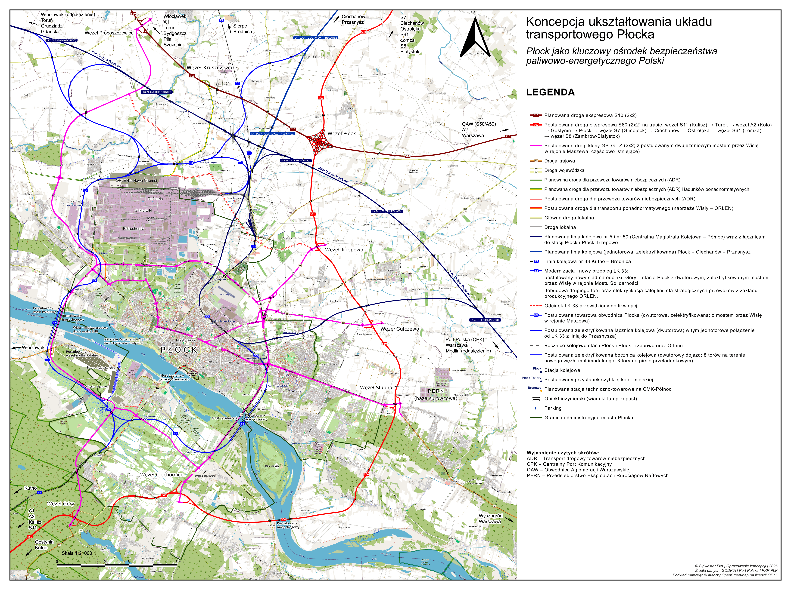
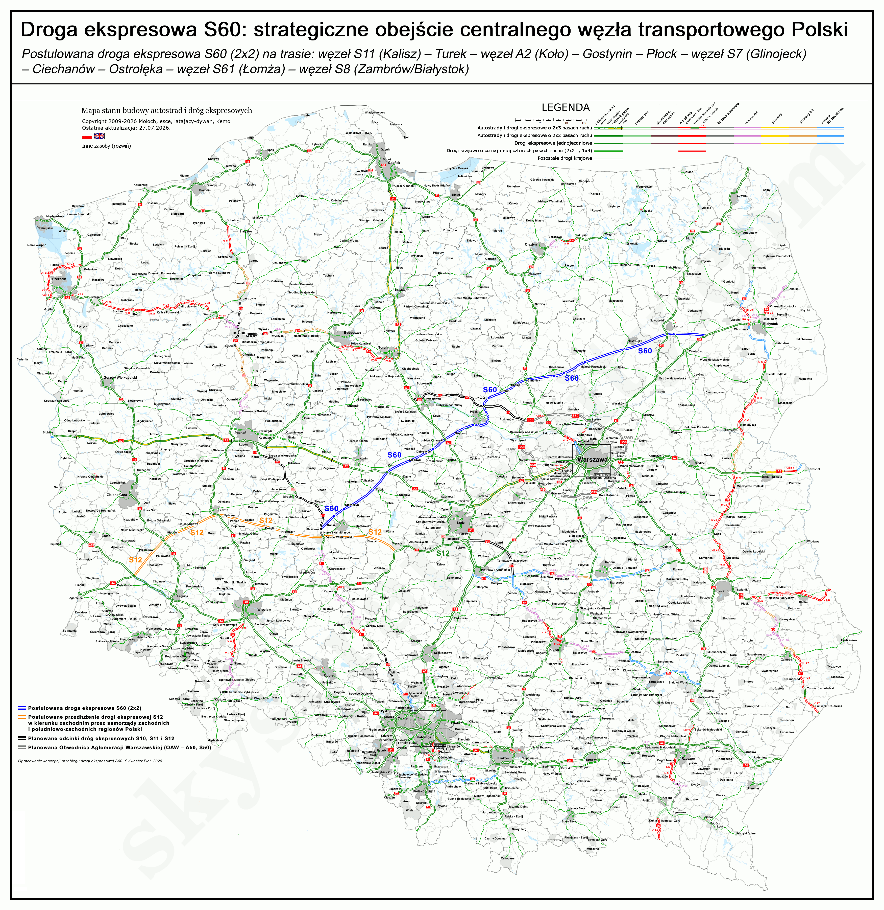
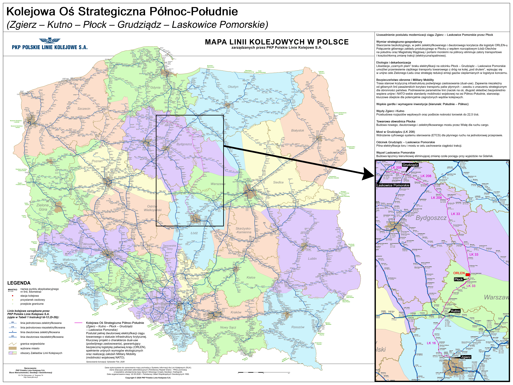

Przedmiotem niniejszego opracowania jest wykazanie konieczności pilnego i kompleksowego przemodelowania infrastruktury transportowej Płocka, będącego kluczowym, strategicznym ogniwem w systemie bezpieczeństwa energetycznego, paliwowego oraz obronnego Rzeczypospolitej Polskiej. Obecny układ komunikacyjny generuje krytyczne ryzyka operacyjne ze względu na brak bezkolizyjnych powiązań z siecią dróg szybkiego ruchu oraz niedostosowanie sieci kolejowej do wymogów masowego transportu cargo i przewozów pasażerskich.
Osiągnięcie pełnej odporności logistycznej i gospodarczej tego kluczowego hubu przemysłowego wymaga równoległego wdrożenia zintegrowanego pakietu rozwiązań infrastrukturalnych, opierającego się na czterech głównych filarach:
Warunkiem synergii tych działań jest systemowe i ciągłe dostosowywanie parametrów technicznych publicznej sieci transportowej do dynamicznie zmieniających się potrzeb technologicznych i surowcowych strategicznych zakładów przemysłowych Płocka.
Zintegrowane inwestycje w rejonie Płocka spełniają w 100% kryteria infrastruktury podwójnego zastosowania (Dual-Use) i kwalifikują się do natychmiastowego dofinansowania z budżetu unijnego Military Mobility oraz krajowych środków obronnych.
Współczesne wyzwania geopolityczne, narastające zagrożenia hybrydowe oraz wymogi mobilności wojskowej (Military Mobility) NATO wymuszają natychmiastową weryfikację mapy transportowej Polski w rejonie jej najważniejszego węzła rafineryjno-petrochemicznego i wodorowego – Płocka. Nadrzędnym celem państwa musi być zapewnienie ciągłości operacyjnej i obronnej płockich zakładów, które stanowią serce zaopatrzenia paliwowego kraju. Pomimo tak fundamentalnej roli, wieloletnie, systemowe zaniedbania doprowadziły do sytuacji, w której miasto pozostaje komunikacyjną wyspą.
Dotychczasowe, odizolowane plany centralne – w tym rozbudowa drogi S10 omijającej miasto daleko od północy oraz doraźne modernizacje tras krajowych do klasy GP – nie eliminują ryzyk systemowych. Taki układ całkowicie pozbawia Płock szansy na utworzenie choćby częściowego ringu obwodowego. Stanowi to krytyczne zagrożenie w sytuacjach kryzysowych, drastycznie ograniczając mobilność służb ratowniczych oraz uniemożliwiając sprawną ewakuację ludności z zagrożonych stref aglomeracji.
W zaistniałej sytuacji konieczne jest podejście wielowektorowe. Strukturalna rekonfiguracja układu kolejowego, rozbudowa zintegrowanego ringu miejskiego oraz wprowadzenie Drogi Ekspresowej S60 jako jednego z głównych elementów sieci krajowej stanowią współzależne projekty. Działania te muszą zostać zrealizowane przy skoordynowanej współpracy resortów centralnych (MON, MI, MAP), samorządów oraz spółek Skarbu Państwa.
Aglomeracja płocka skupia unikalną w skali europejskiej koncentrację zakładów dużego i zwiększonego ryzyka wystąpienia poważnej awarii przemysłowej (zgodnie z dyrektywą SEVESO III). Kompleks produkcyjny ORLEN S.A. oraz baza surowcowo-magazynowa PERN S.A. odpowiadają za ciągłość dostaw paliwowych dla gospodarki oraz Sił Zbrojnych RP. Ta scentralizowana infrastruktura krytyczna znajduje się obecnie w logistycznym klinczu – transport produktów rafineryjnych i surowców opiera się na kolizyjnych, wąskich drogach jednojezdniowych oraz liniach kolejowych przecinających środek osiedli mieszkaniowych.
W tym kontekście fundamentalnym błędem planistycznym jest traktowanie infrastruktury transportowej i surowcowej jako statycznej. Istnieje krytyczna konieczność usankcjonowania prawnego i przestrzennego zasady ciągłego, wzajemnego dostosowywania publicznych korytarzy transportowych oraz podziemnych sieci przesyłowych. Współczesna inżynieria pozwala na całkowite eliminowanie kolizji przestrzennych – w miejscach zbliżenia projektowanych dróg i torów do istniejących korytarzy rurociągowych, zakłady przemysłowe zyskują możliwość elastycznego zarządzania swoją infrastrukturą. Poprzez zastosowanie zaawansowanych metod bezwykopowych (np. horyzontalnych przewiertów sterowanych HDD), trasy przesyłowe mogą być bezkolizyjnie dostosowywane i przekładane w sposób całkowicie nieinwazyjny dla nowo powstających arterii. Technologiczna koordynacja tych działań sprawia, że podziemne rurociągi przestają być barierą planistyczną, stając się elementem zintegrowanego systemu logistycznego.
Podsumowując: dalsze podtrzymywanie komunikacyjnego status quo w rejonie płockiego węzła przemysłowego rodzi krytyczne niebezpieczeństwo o charakterze systemowym, uderzając bezpośrednio w fundamenty bezpieczeństwa cywilnego oraz obronności Rzeczypospolitej Polskiej. Dynamiczny rozwój technologiczny, surowcowy i produkcyjny kompleksu rafineryjno-petrochemicznego, przy jednoczesnym pozostawieniu przestarzałej, niewydolnej i kolizyjnej sieci transportowej, nieuchronnie doprowadzi do przekroczenia barier bezpieczeństwa publicznego. W przypadku wystąpienia poważnej awarii przemysłowej, aktu sabotażu czy eskalacji konfliktu hybrydowego, brak odseparowanych szlaków cargo i niezależnych korytarzy strategicznych wygeneruje katastrofalne zagrożenie dla życia i zdrowia ludności oraz integralności miejskiej Płocka. W wymiarze militarnym podtrzymywanie obecnego stanu infrastruktury paraliżuje mobilność wojsk sojuszniczych NATO i Wojska Polskiego (doktryna Military Mobility), odcinając siły zbrojne od ich głównego, centralnego źródła zaopatrzenia paliwowo-energetycznego. Kosztem zaniechania działań modernizacyjnych nie są dziś wyłącznie straty ekonomiczne, lecz realne ryzyko destabilizacji systemu obronnego kraju i utraty zdolności operacyjnych na wschodniej flance.
Uzasadnienie natychmiastowej rozbudowy układu transportowego zyskuje nowoczesny wymiar technologiczny. Płock, jako serce Mazowieckiej Doliny Wodorowej, uruchomił już instalacje doczyszczania wodoru i staje się głównym hubem dystrybucyjnym zielonego wodoru dla transportu ciężkiego w Polsce. Przewóz wodoru w tzw. tube-trailerach pod wysokim ciśnieniem (350–500 bar) niesie za sobą gigantyczne wyzwania z zakresu prewencji antyterrorystycznej i ratownictwa. Prowadzenie takiego transportu starymi drogami krajowymi (DK60/DK62) generuje drastyczne ryzyko wypadkowe i sabotażowe. Bezpieczna, bezkolizyjna i odizolowana od miast infrastruktura jest niezbędna do dystrybucji paliwa nowej generacji do odbiorców strategicznych.
Utrzymywanie obecnego anachronizmu komunikacyjnego wokół infrastruktury krytycznej generuje trzy fundamentalne ryzyka:

Płock charakteryzuje się unikalnym położeniem geograficznym – leży w bliskości centralnego węzła drogowego i kolejowego kraju, CPK oraz aglomeracji warszawskiej i łódzkiej. Dodatkowo, położenie nad Wisłą, będącą częścią międzynarodowej drogi wodnej E40, stwarza idealne warunki do budowy w Płocku nowoczesnego węzła multimodalnego, integrującego transport drogowy, kolejowy i śródlądowy dla całej Polski Centralnej.
Perspektywa ta zyskuje krytyczne znaczenie w kontekście rządowego programu Port Polska, obejmującego budowę centralnego hubu w Baranowie (zlokalizowanego około 80 km od Płocka) oraz głęboką rozbudowę portu lotniczego w Modlinie. Postulowany węzeł multimodalny w Płocku zyskuje status strategicznego hubu konsolidacyjnego o charakterze dwukierunkowym: zapewnia bezpośrednią integrację pasażersko-czarterową z Lotniskiem Warszawa-Modlin poprzez projektowaną linię kolejową nr 247, przy jednoczesnym otwarciu bezkolizyjnego korytarza dla masowych potoków cargo kierowanych Towarową Obwodnicą Płocka na południe, wprost do głównego węzła logistycznego Portu Polska w Baranowie. Uruchomienie tej zintegrowanej sieci lotniczej wygeneruje lawinowy wzrost potoków towarowych i pasażerskich, na które infrastruktura Płocka musi być prewencyjnie przygotowana.
Postulowany płocki węzeł multimodalny stanowi kluczowe narzędzie służące do redukcji presji logistycznej na sieć drogową wokół przyszłego lotniska. Przejęcie masowych potoków towarowych przez ekologiczne korytarze szynowe oraz śródlądowy transport wodny w ramach międzynarodowej drogi wodnej E40 pozwoli na drastyczną redukcję emisji spalin z transportu kołowego. Lokalizacja węzła w aglomeracji płockiej jest w tym zakresie bezkonkurencyjna – Płock leży bezpośrednio nad Zbiornikiem Włocławskim, którego wysokie parametry hydrologiczne gwarantują znacznie wydłużony sezon nawigacyjny oraz stabilność głębokości tranzytowych dla ciężkiego frachtu towarowego, co jest nieosiągalne dla rzeki swobodnie płynącej w rejonie Wyszogrodu czy Warszawy. Rozwiązanie to trwale zabezpiecza środowisko naturalne Polski Centralnej w duchu nowoczesnej polityki klimatycznej.
Aglomeracja płocka charakteryzuje się unikalną w skali europejskiej specyfiką strukturalną. W przeciwieństwie do państw Europy Zachodniej, gdzie infrastruktura rafineryjno-przesyłowa jest silnie zdecentralizowana i rozproszona geograficznie, polski system bezpieczeństwa energetycznego – ukształtowany jeszcze w minionej epoce geopolitycznej – wykazuje skrajnie wysokie, procentowe uzależnienie od jednego ośrodka przemysłowego. Koncentracja dominującego wolumenu krajowej produkcji paliw w płockiej rafinerii, w połączeniu z funkcją międzynarodowego hubu sieci rurociągowych PERN S.A., tworzy zjawisko krytycznej asymetrii ryzyka.
W obliczu tak zdefiniowanej struktury zagrożeń, kluczowym elementem strategii obronnej i prewencyjnej państwa musi być zapewnienie najwyższej przepustowości korytarzy transportowych oraz radykalne skrócenie czasu dotarcia do Płocka dla zewnętrznych sił ratowniczych. Skala potencjalnego zdarzenia o charakterze poważnej awarii przemysłowej, aktu sabotażu czy ataku hybrydowego w rejonie tak potężnego kompleksu produkcyjnego z definicji przekracza autonomiczne zdolności ratownicze regionu. Akcja ratunkowo-odszkodowawcza oraz prewencyjna będzie wymagała natychmiastowego, masowego zaangażowania specjalistycznych formacji technicznych, medycznych i gaśniczych z wielu odległych rejonów kraju.
W konsekwencji, obecna zapaść infrastruktury drogowej i kolejowej wokół Płocka przestaje być problemem lokalnym. Jest to krytyczne wąskie gardło, które w warunkach kryzysowych paraliżuje nie tylko centralny węzeł surowcowo-energetyczny, ale bezpośrednio destabilizuje bezpieczeństwo surowcowe całej Rzeczypospolitej Polskiej, przemysłu rafineryjnego części Niemiec oraz – co fundamentalne w kontekście współczesnych zagrożeń asymetrycznych – zdolności operacyjne i logistyczne całej wschodniej flanki NATO.
Warto kategorycznie podkreślić, że planowane inwestycje w sojuszniczą infrastrukturę przesyłową NATO (systemy rurociągów paliwowych na wschodniej flance) nie zniwelują tych ryzyk operacyjnych. Rurociągi wojskowe, z uwagi na swoją jednokierunkową specyfikę zaopatrzeniową oraz ograniczenia asortymentowe, stanowią jedynie komponent systemu logistycznego, którego fizycznym punktem początkowym i produkcyjnym pozostaje płocki węzeł surowcowo-energetyczny. Ponadto, w warunkach konfliktu pełnoskalowego lub działań asymetrycznych, podziemne linie przesyłowe są skrajnie podatne na akty sabotażu i cyberataki na infrastrukturę sterującą (stacje pomp). Zgodnie z doktryną dywersyfikacji logistycznej NATO, w przypadku eliminacji rurociągu, ciężar natychmiastowego zasilania wojsk przejąć musi masowy transport kołowy (korytarze techniczne ADR) oraz kolejowy (składy RID). Bez radykalnej rozbudowy Drogi Ekspresowej S60 oraz dobudowy drugiego toru z węzła Trzepowo, system obronny kraju pozbawia się logistycznego bypassu, pozostawiając wschodnią flankę Sojuszu bez realnego zabezpieczenia na wypadek unieruchomienia sieci podziemnych.
Obecna sieć drogowa skrajnie centralizuje ruch na węźle Łódź Północ (Stryków) oraz na odcinku autostrady A2 w stronę Warszawy. W perspektywie najbliższych lat rejon ten zostanie krytycznie obciążony lawinowym wzrostem potoków transportowych generowanych przez budowę i uruchomienie megahubu Portu Polska w Baranowie. Forsowane obecnie plany doraźnego poszerzania istniejących autostrad stoją w sprzeczności z elementarną wiedzą inżynieryjno-planistyczną. Doświadczenia międzynarodowe jednoznacznie dowodzą, że zwiększanie liczby pasów ruchu na przeciążonych trasach nie prowadzi do ich trwałego udrożnienia, lecz wywołuje zjawisko ruchu wzbudzonego, co w efekcie jeszcze bardziej potęguje kongestię transportową.
W warunkach kryzysu paraliż węzła w Strykowie zamraża transport w całej centralnej Polsce. Postulowana trasa S60 stanowi w tym systemie kluczowy element zaradczy. Tworzy ona geometryczną alternatywę i potężny, niezależny korytarz strategiczny, który zdejmuje tranzyt międzynarodowy oraz lotniskowy z osi Warszawa – Łódź zanim dotrze on do zatłoczonego centrum, skutecznie rozpraszając ryzyko operacyjne.
Realizacja węzła Łódź Południe oraz tras S12 i S8 na południowych obrzeżach Łodzi – choć w pełni uzasadniona dla obsługi innych makroregionów – nie rozwiązuje problemów strukturalnych Polski Centralnej w relacji z północnym Mazowszem, ponieważ inwestycje te w wielu wymiarach wciąż operują wewnątrz skrajnie przeciążonych relacji Łódź – Warszawa oraz Śląsk – Warszawa. W obliczu uruchomienia megahubu Portu Polska w Baranowie doprowadzi to do katastrofalnej kumulacji zatorów transportowych na istniejących szlakach dojazdowych. Jedynie Droga Ekspresowa S60, jako całkowicie niezależny, północny korytarz horyzontalny, pozwala na fizyczne wyprowadzenie masowego tranzytu poza ten krytyczny obszar, gwarantując realne rozproszenie ryzyka strategicznego i obronnego dla państwa oraz odciążenie sieci centralnej zanim dotrze ona do punktów krytycznych.
Struktura logistyczna aglomeracji płockiej w ujęciu bezpieczeństwa i transportu musi opierać się na dwóch nezależnych, wzajemnie dopełniających się systemach drogowych:

Prawobrzeżny, przemysłowy Płock jest odcięty od lewego brzegu rzeki Wisłą, co w obliczu zagrożeń ze strony Rosji wymaga budowy nowych, ufortyfikowanych przepraw dokładnie tutaj, a nie kilkadziesiąt kilometrów dalej. Rządowi planiści wysuwają zarzut, że zbliżenie drogi ekspresowej do Płocka tworzy „skumulowany cel” (rafineria + węzeł) dla ataku wroga.
Zarzut ten opiera się jednak na przestarzałych założeniach planistycznych. Kompleks rafineryjno-petrochemiczny w Płocku już teraz jest celem o najwyższym priorytecie strategicznym. Brak nowoczesnej infrastruktury transportowej w jego bezpośrednim sąsiedztwie nie zmniejsza ryzyka ataku, a jedynie drastycznie obniża zdolności obronne, ratownicze oraz logistyczne kraju w sytuacji kryzysowej. Nowa przeprawa przez Wisłę oraz trasa S60 w rejonie Płocka nie generują dodatkowego zagrożenia – one to zagrożenie rozpraszają, likwidując dotychczasowe, krytyczne wąskie gardło transportowe i dając Siłom Zbrojnym RP oraz służbom ratunkowym niezbędną elastyczność operacyjną. Taki tok myślenia jest błędem z perspektywy taktyki obronnej NATO:
W związku z tym konieczna jest budowa dwóch przepraw drogowych przez Wisłę:
Budowa postulowanej trasy S60 w optymalnym, bezkolizyjnym śladzie wymusza przejście przez skrajny fragment Gostynińsko-Włocławskiego Parku Krajobrazowego. Wdrożenie tego rozwiązania jest całkowicie pozbawione realnej alternatywy przestrzennej. Stanowi ono absolutny priorytet dla zapewnienia sprawnej ewakuacji ludności z lewobrzeżnych (południowych) oraz pozostałych dzielnic Płocka, gwarantując bezpośredni dostęp do magistrali o wysokiej przepustowości, wyprowadzającej potoki pojazdów z obszaru potencjalnego zagrożenia.
Jednocześnie przebieg ten determinuje bezkompromisową mobilność wojskową, umożliwiając – w sytuacjach nagłych, kryzysowych oraz w stanach bezpośredniego zagrożenia hybrydowego – błyskawiczny i chroniony transport sił zbrojnych z lewego brzegu Wisły bezpośrednio w rejon strategicznego kompleksu rafineryjno-petrochemicznego.
Spełnienie wymogów bezpieczeństwa publicznego i przepisów SEVESO III wymaga natychmiastowego wyprowadzenia ciężkich składów towarowych z niebezpiecznymi substancjami (wg przepisów RID) z gęsto zaludnionej strefy mieszkalnej miasta na jego obrzeża.
Nowy układ kolejowy aglomeracji musi zostać zintegrowany z siecią krajową i międzynarodową poprzez:
Postuluje się pełną, dwutorową elektryfikację ciągu towarowego o statusie infrastruktury krytycznej. Jest to kluczowy projekt o charakterze podwójnego zastosowania (Dual-Use), gwarantujący bezpieczną logistykę paliwową kraju (Orlen), spełnienie unijnych wymogów ekologicznych oraz realizację założeń mobilności wojskowej NATO (Military Mobility).
W ramach realizacji tego przedsięwzięcia jako absolutny priorytet pierwszego etapu postuluje się dobudowę drugiego toru na trasie Płock – Kutno, rozpoczynając od miejsca nowo projektowanego węzła kolejowego w Trzepowie, co pozwoli na natychmiastowe zlikwidowanie krytycznego wąskiego gardła logistycznego i skokowe zwiększenie przepustowości cargo jeszcze przed pełnym wdrożeniem pozostałych elementów osi.

Kluczowym czynnikiem drastycznie zwiększającym geopolityczne i militarne znaczenie Drogi Ekspresowej S60 jako jednego z głównych filarów sieci krajowej jest jej bezpośrednia synergia operacyjna z postulowanym przedłużeniem drogi ekspresowej S12 w kierunku zachodnim i południowo-zachodnim. Postulat ten zyskuje silne, jednolite poparcie samorządów tej części kraju, dążących do przełamania marginalizacji komunikacyjnej regionu. Droga S60 już w swoim autonomicznym wariancie realizuje w pełni niezależny, równoleżnikowy charakter obronny, stanowiąc kluczową oś manewrową dla sił sojuszniczych NATO. Jednak to właśnie funkcjonalne spięcie obu tych arterii, które zbiegają się w strategicznym węźle w okolicach Kalisza i Ostrowa Wielkopolskiego, tworzy jednolity, bezkolizyjny korytarz transwersalny o najwyższym priorytecie obronnym, multiplikując możliwości operacyjno-logistyczne na całej osi wschodniej flanki sojuszu.
Połączenie baz Wojska Polskiego i NATO: Rejon południowo-zachodniej Polski (Dolny Śląsk, Ziemia Lubuska, Wielkopolska) charakteryzuje się najwyższym stopniem nasycenia strategicznymi jednostkami wojskowymi, poligonami oraz centrami logistycznymi Sił Zbrojnych RP i sojuszników (np. Żagań, Świętoszów). Połączenie postulowanej S12 z trasą S60 otwiera dla tych formacji najkrótszą, bezkompromisową drogę szybkiego przerzutu w kierunku północno-wschodnich rubieży kraju.
Najkrótsza i odseparowana marszruta: Połączony korytarz S12/S60 umożliwia całkowite ominięcie skrajnie przeciążonego łódzkiego oraz warszawskiego węzła transportowego. Gwarantuje to bezpośredni i błyskawiczny przerzut ciężkich transportów wojskowych z głębi kraju pod newralgiczne rejony przygraniczne: granicę z obwodem królewieckim, granicę polsko-białoruską, Przesmyk Suwalski oraz dalej, ku państwom bałtyckim.
Płock jako strategiczne zaplecze paliwowe w marszu: W tak skonstruowanej osi transportowej Płock staje się kluczowym, centralnym portem zaopatrzeniowym dla operujących wojsk. Masowe kolumny i transporty logistyczne poruszające się z południowego zachodu mogą w sposób bezkolizyjny i bezpieczny (odizolowany od centrów miast) zatankować oraz pobrać paliwa klasyczne i wodorowe bezpośrednio z płockiego kompleksu rafineryjno-petrochemicznego, kontynuując natychmiastowy marsz w stronę teatru działań wojennych.
Radykalna modernizacja i rozbudowa układu transportowego Płocka stanowi warunek konieczny dla utrzymania bezpieczeństwa paliwowo-energetycznego Polski. Nowa Towarowa Obwodnica Kolejowa, pasażerski most przez Wisłę, ring miejski oraz postulowana Droga Ekspresowa S60 stanowią zintegrowane, wzajemnie dopełniające się filary nowoczesnej sieci logistycznej. Wymienione potrzeby infrastrukturalne są relatywnie niskie w stosunku do wolumenu PKB, jaki od dekad, obecnie, jak i w przyszłości będzie wypracowywać płocki ośrodek przemysłowy.
Inwestycje te stanowią finansową i logistyczną polisę bezpieczeństwa kraju. Całość założeń wykazuje pełną kompatybilność z unijną doktryną obiektów o podwójnym przeznaczeniu (Dual-Use). Gwarantuje to bezwzględną kwalifikowalność projektu do pozyskania unijnych środków celowych z programu CEF Transport – Military Mobility, jak również z krajowego budżetu obronnego przekraczającego obecnie poziom 4,7% PKB. Najważniejszy węzeł energetyczny, paliwowy i wodorowy Polski musi przestać być komunikacyjną wyspą.
Podsumowując, zintegrowana realizacja wszystkich postulowanych projektów infrastrukturalnych – w pełni uzasadniona strategicznym położeniem geograficznym Płocka w geometrycznym centrum kraju oraz nad kluczowym korytarzem Wisły – stanowi nieodzowny fundament rozwiązujący krytyczne problemy logistyczne regionu. Choć wdrożenie tej koncepcji wiąże się z poważnymi nakładami budżetowymi, to w ostatecznym bilansie makroekonomicznym generuje ono potężną, bezprecedensową wartość dodaną. Inwestycje te trwale zabezpieczają ciągłość operacyjną serca surowcowego kraju, rekonfigurują mapę transportową Polski Centralnej i wznoszą odporność strategiczną wschodniej flanki NATO na najwyższy poziom bezpieczeństwa kontynentalnego.